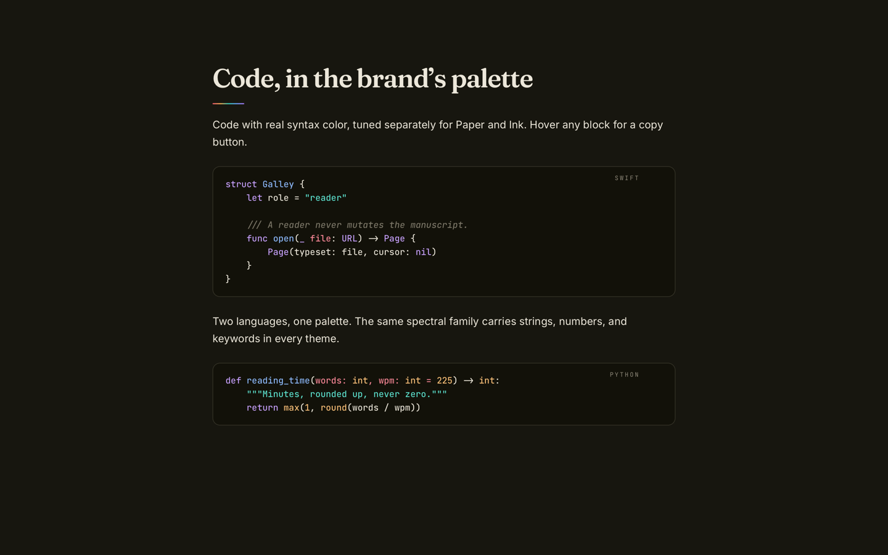
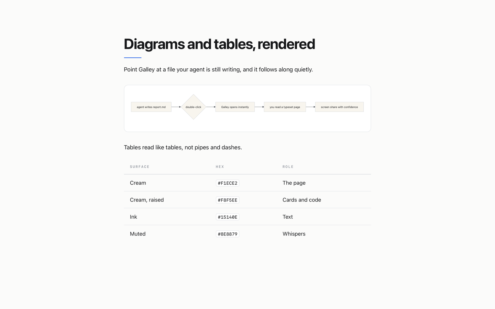
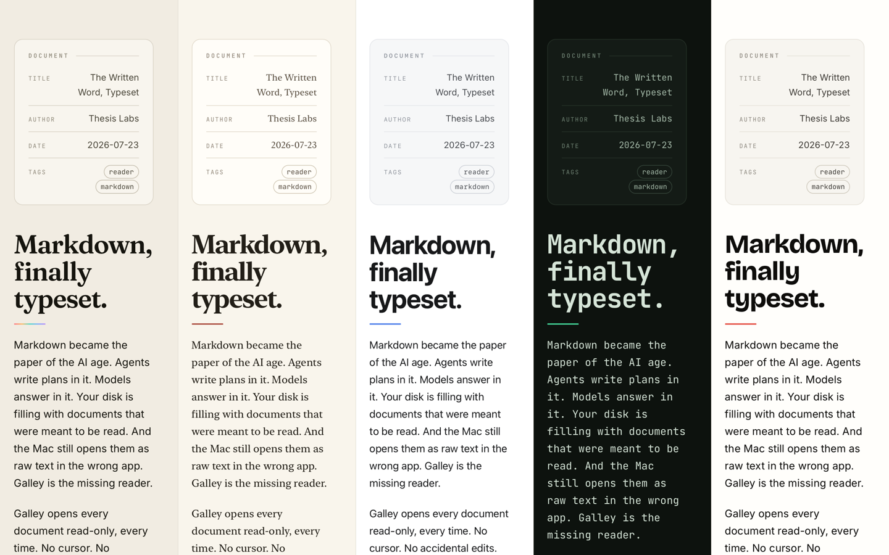

The paper of the AI age.
Markdown became the paper of the AI age. Agents write plans in it. Models answer in it. Your disk is filling with documents that were meant to be read. And the Mac still opens them as raw text in the wrong app. Galley is the missing reader.
Galley opens every document read-only, every time. No cursor. No accidental edits. Nothing to mangle during a screen share. When you need to fix a typo, edit mode is one keystroke away, and leaving it is just as fast.
Everything renders.
Tables, task lists, footnotes, callouts. Code with real syntax color. Mermaid diagrams. Math. Front matter as a tidy card instead of a wall of dashes.
Point it at a file your agent is still writing. Galley follows along quietly and keeps your place. A small pill says updated. That is the whole ceremony.


Five themes.
Five themes: Thesis, Manuscript, Studio, Terminal, Editorial. Each with its own light and dark. Fonts, colors, and accents are yours to change, and the defaults are the best ones.
